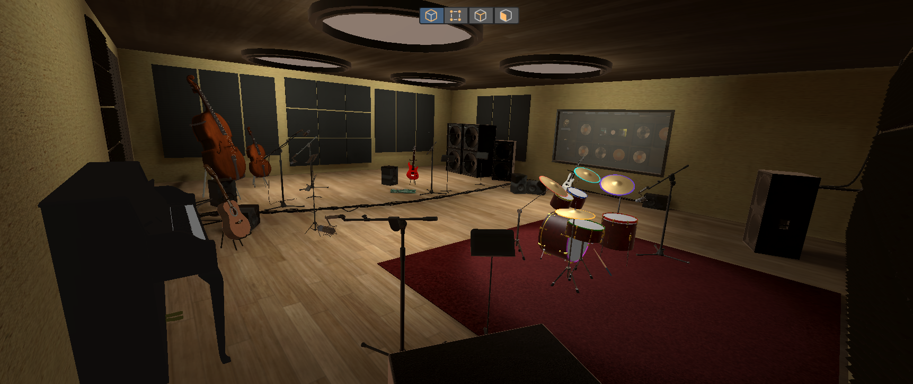
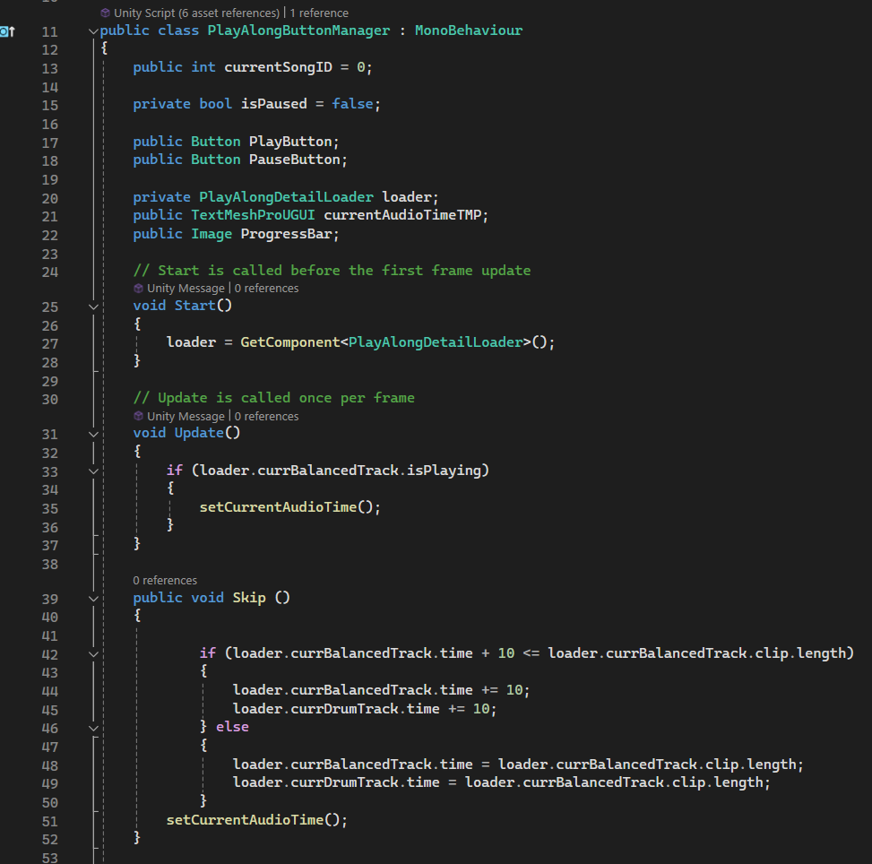

Through this project, I had the opportunity to merge many of my passions. Being
someone with a deep background in both music and drumming, having the chance to
create something within this space through my programming, modelling, graphics
backgrounds, was a very exciting opportunity. This journey of creating a musical
immersive experience deeply resonated with both my artistic and technical sides.
Other team members
Name: Joshua Davies --- Role: (Lead Programmer, Project Manager, Sound/Interaction Design)
Name: Jake Boulton --- Role: (UI and UX design, 3D Artist)
Name: Mai Ye --- Role: (VFX Artist, Programmer, UX design)
Name: Hwanjoon Jang: --- Role: (QA, Programmer, Prototyper)
Concept Overview
When discussing different possibilities for our project, one of the biggest reasons we were led towards VR drumming was because of how users would be able to interact with the experience.
There aren't many virtual music applications that could be accurately portrayed in virtual reality, simply due to the complexity of most instruments. However, with drums, all a musician needs are
a set of drums and sticks. This type of experience would also let us explore developing a seated VR experience, which is atypical about VR applications. With the
prospects of being able to create a realistic, fun, and educational virtual experience, we were sold on BeatBoxVR.
BeatBoxVR, is a VR Drums experience that allows for the user to experience their
greatest drumming fantasy! Our aim was to develop a portable and entertaining VR drum experience, allowing you to enjoy
a rock concert anytime, anywhere. Through the utilization of VR technology, we hoped to leverage the headsets capabilities to create an interactive
3D environment with realistic audio, haptic feedback, and visual effects. With a variety of environments and drum cosmetics, we hoped that there would
be a little something for everyone. We hoped that our product could be used by a wide range of drumming enthusiasts, regardless of their experience with VR or drumming.
This is what brought us to creating educational tutorial modes along with challenge and play along modes, allowing for the user to drum and learn at their own pace.
Related Material
During the early stages of prototyping and designing our product, there were two main games that were used as key references, Rock Band and Beat Saber.
For Rock Band, we felt that the approach they used for the drum instrument was very effective in making it easy for the user to comprehend how to approach playing the accompanying
drum kit, regardless of experience. For Beat Saber, we used this as the base for understanding how to effectively approach developing a rhythm game in virtual reality. This
brought on ideas for different cosmetics and environment customizations as well as how we could effectively leverage visual effects with VR controllers.
Another step we took to prepare was to look at some of the existing VR drumming applications in order to see how they approached different challenges. We ended up looking through
several applications including Paradiddle and VR Drums Ultimate Streamer. From looking at these applications, we felt that
the key differences between the applications were how realistic the graphics were. This helped us decide on a semi-realistic theme early in the process. This also
helped us learn how different applications were dealing with the lack of kick and hi-hat pedals. Most applications seemed to simply use the triggers on the controllers,
so, we decided to do the same.
User Journey
Free Play Mode
Once the player has loaded BeatBoxVR, the will be dropped into a virtual recording studio in free play mode. Here, they're able to get acquainted with the controls
as well as how they can interact with the virtual drum set
Settings Customization
At this point, the player can also setup their desired experience depending on what they're looking for in BeatBoxVR. In the customization settings, you can toggle
settings like animations, haptics, and VFX allowing for people to decide their desired level of realism. Additionally, you are select from a variety of drum kit cosmetics
and environments.
Tutorial Mode
In order for the user to get more comfortable with the midi note system, the player can enter tutorial mode were they can practice various preset drum patterns at
various tempos.
Song Challenge Mode
Once they are comfortable with the system, the player can move into the challenge mode where they can drum along to popular songs!
Play Along Mode
The player can also try out the Play Along mode, where you can change the volume levels of the main and drum tracks to either play along a set of popular songs or
freestyle! Here, the player can feel like they're a real drummer in the band.
Timeline
Recording Studio Environment
During the first weeks of the project, I spent them gathering resources and modelings assets to be used in a realistic looking
recording studio based off of various reference photos. My initial design later had to be scaled down due to processing issues within the headset

[View Reference Images]
Play Along Mode
After completing the recording studio, I than began working creating the Play Along mode. I was in charge of all aspects of this mode
including the UI, programming, and audio
UI Design
In Adobe Photoshop, I created the design of the UI to match the style of typical audio players. This ment that I would include information about each song and display
it simply.
[UI Hierarchy]
Show PlayAlongDetailLoader and Song Details Table
Audio Player Functionality
In order to match that of a normal audio player, I implemented typical commands which would allow for the user to play/pause the current song while also skipping forward
or backwards by 10 seconds. I also worked to implement a scrub feature so that, by pointing the ray and clicking on the lower bar it would accurately fill the bar and calculate
the approximate time in which it correlated to in the current song.
Show PlayAlongButtonManager

Show ScrubFeature
Song Track Control
Something that I thought would be unique was to build the audio player in a way to that the user could control volume the drum and main tracks. This would allow the user
to play along with the normal song, play with just the drums, or play without drums.
Song Selection
I attempted to pick a set of popular songs from a wide range of genres that had easy to moderatly difficult drumming parts. THen through the use of AI, I was able to
break the songs down into the essential main and drum parts.
UI Refactoring
Once I had completed the Play Along mode, I worked to refactor the UI's design. Its old version was very distracting and it was hard to understand
some of the options. With the help of Jake who created additional UI components that matched the coloring and design of my Play Along UI, I worked to reapply
the textures. I also remade the customization page to have shifting functionality rather than having everything on the screen at once.
OLD UI Design
NEW UI Design
Miscellaneous Tasks
After this point, I began to float around, working to fix or improve various elements throughout the project.
Scene Optimization
One of the key issues that we ran into was improper scene optimization. There were many cases where 3D objects or lighting data was too complex, which caused for the
headset to lag. I worked to help optimize or remove broken elements throughout the built environment scenes.
Graphics
I was in charge of editing the various videos necessary throughout the process. I was also the one who came up with the design for the initial logo.
Remapped Song Mode
The last major task I underwent was the remapping the drum nodes being created due to the previous version being inaccurate and desynced from the song.
Additional Features
For my additional feature, there were two features that I worked on adding to the project. The first
Splash Intro Animation
In order to make the project feel more professional, I wanted to create a splash logo intro based off out my previous design of the logo.
First, I went into Ableton and created a drum beat using a Taiko Drum.
Secondly, using Adobe After Effects, I created an animation that was synced with the earlier theme song..
Watch the rendered Splash Intro Animation!
Finally, I created a new scene within the Unity project that would play the video and transition to the main scene with the SceneManager. This would make it so that upon loading up BeatBoxVR, the intro would play in
headset before transitioning into the recording studio.
New Drum Sample Kits
I felt that one of the key features was a larger variety of drum samples. Normal electronic drum kits come with a wide variety of presets and samples
based on different genres and models of drum. So I wanted to add a similar feature to our kit
First, to get the samples, I went into Ableton and used a VSTPlugin that I had purchased in the past called Abbey Road | 60s Drummer.
Here I was able to process various drum samples for all the necessary drums and cymbals with custom mixing along with presets of various styles
including Soul, Jazz, Rock n Roll, and more!
Second, once I had the samples, I had to refactor the SoundManager in Unity. Because it was previously meant to only support the single kit, I had to create
a new array which could not only hold all of the samples, but could then pass those values into the original Percussion Sounds array. This needed to be done because
Percussion Sounds was being used in various other places throughout the project and would have required unnecessary refactoring
Finally, in order for people to access it, I added a new section into the customization settings. This however, caused for them to be pushed off the screen which lead
to be implementing a scroll feature. This could be used in the future if we were to add further items in the customization settings.
Note: Innovate UK shows off the splash logo animation and expanded drum kit.
Reflection
I believe our project achieved the fundamental goals we set in our original plan. During our initial pitch, we were skeptical about being able to get the
song mode working effectively in a way that could be easily enjoyed by the user. Reflecting on this assumption, we not only created 2 playable songs in song mode,
but we also added a tutorial mode which we had originally not planned on implementing. With this addition, we created a fully immersive VR drumming experience that was
educational and entertaining. Having been nominated as Finalist in the Innovate Tech Awards as well as having multiple outside parties querying about further development,
I am confident in the product that we set out to create.
Personally, I believe that the biggest challenge that I dealt with was working through scene optimization. This was an area I was unfamiliar with. This was mostly
due to my not being familiar with the limitations in which the VR headsets were strained by. Nearly all of the development that I have done involving 3D modelling has
been for computer applications which typically run far more smoothly than VR programs. As a result of this experience, when I first loaded up my program, it ran extremely
slow due to the number of lights and complex models. One of the key challenges in scene optimization is finding the right balance of aesthetics and performance. For a drumming
application, it was important that the scene was as efficient as possible for the drums to be as responsive to hits as possible. In order to create visually appealing environments
while remaining efficient, I had to do a fair amount of research into understanding the key techniques for optimizing rendering. In the future I will pay far more attention to the
number of lights being used in the scene as well as making better decisions on what objects could simply be 2D textures rather than full 3D models.
I believe overall that the team was very well balanced. Everyone on the team had diverse backgrounds in their personal skill sets, which made it much easier to divvy out tasks which people could complete.
On top of that, the entire team was very effective in working together to solve any dire issues that would arise
involving unknown errors or bugs that were occurring.